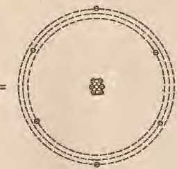
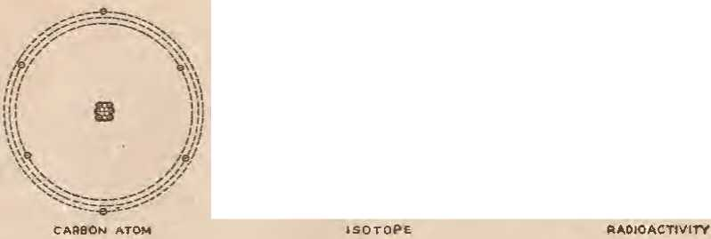

What is radioactivity? and what jtre some of its practical uses?
cent advances in design- endurance and speed
: grandeur of the largest and oldest of earth’s inhabitants
THE MISSION OF THIS JOURNAL
News sources that are able to keep you awake to the vital issues of our times must he unfettered by censorship and selfish interests. "Awake!" has no fetters. It recognizea facts, faces fa^ts. S free to publish facts. It is not bound by politicsl ambitions or obligations; it is unhampered by advertisers wncs - toes must not he trodden on; it is unprejudiced by traditional creeds. This journal keeps itself free that it may speak freely to you. But it does not abuse its freedom. It maintains integrity to truth.
"Awake 1” uses the regular news channels, but is not dependent on them. Its own correspondents are on all continents, in scores ofnations. From the four corners of the earth their uncensored. on-the-scenes reports come to you through these columns. This journal's viewpoint is not narrow, but is intetnational. It is read in many nations, in many languages, by persons of all ages. Through its pages many fields of knowledge pass in review—-go'o-erninent, commerce, religion, history, geography, science, social conditions, natural wonders—why, its cover-^e is as broad as the earth and as high as the heavens.
"Awake I’’ pledQes itself to righteous principles, to exposing hidden foes and subtle dangers, to championing freedom for all, to comforting movers and strengthening those disheartened by the failures of a. delinquen t world, reflecting sure hope for the establishment of a. righteous New Wodd.
Get acquainted with "Awake!" Keep awake by reading "Awake!"
--^^^^u^^^^u
PllDLTSni!:D SzMIMONTBt.Y B'f WATCHTOWER BIBLE AND TRACT SOCIETY, INC.
117 Adams Street
N. H. Kl!Omt, Preaidwi
Five cents a copy
Nonc!l to
Remittances: Mnll hY postal note or
by posUII or express money order or by bnttk draft. When cqln or currtncy Js los In the ordlua.)l maUs, tbere is no rtdrm. Remittances troru countries wbtre tho llocloly has oo Btancl olecs mAY be mdo to !be Brooklyn omt», but onll by Jntcroallonol POI!I&l money order. Jlo-ttlpl of • llbw or cenewal subscription •ll be atknowledced onlr when requested.
Brooklyn l, N. Y., U. 9. A. W. E. VAl Amburgh, Seureta'l
One dolla.r a year
SUBSCRIBERS
Notice of expiration: Suol nnllee is senL attb tbo journal •t least two .Isues be!i>!'C the sub scrfsi-.ini expires, Please renew proaipuy.
ItMfo of addms: Plell lend onJ cboop of addreu direct to "‘ cothes than t<> tlte post ollct. Your request should t<!adt us at least three weeks ll4>forS tb<l dntc of IS9U<lm wl!h whl,cl IL is to take r.trect. ^d your old ;u well as the new addr^
lin^lm!d 11.!1 ser.ond-class mattu at Bi'OC!Id7n, N. Y., Aet or
llareb 3, 1819. Ptinted 1D U. S A.
Some Practical Aspects of Radioactivity 7
Do You Want to Increase Your Life Span? 12
Co-operation of Mot.h and Yucca
ENTS
“Thy Word Is Truth”
Who Sponsors the Grpek Monarchy?
Defeuse Granted .JehovoM; witnesses
Position of Witnesses Vindicated
Volume XXVli
Brooklyn, N. Y., November 8, 1946
Number 7r1
WHEN Jehovah God caused the creation of this beautiful earth, He set in operation a mighty laboratory the intricacy and diversity of which bespeak the majesty and the power of its divine Architect. Daily the splendent sun sends forth it:-; radiant lieams, not only to lighten the earth, but also to create an infinite variety of substances for the health and well-being of earthly creatures. Continuously, day and night, summer and winter, year in and year out, powerful natural forc.es ceaselessly perform the bidding of their omnipotent Creator. 'frees grow, flowers bloom, fruits ripen, the tides flow, and tJe earth moves with infinite precision amidst the galaxy of the heavens, all in obedience to the will of the Most High God.
Of the many natural forces with which the earth is endowed, that of radioactivity is of particular interest at this time. This is so, not only because of its prominence in the news events of the day, but because it is another one of the many tools with which man has been enabled to peer into some of the myster-NOVEMBER 8, 10M;
ies of earth's creation, and because it is destined to become of increasing importance in the future. Just what is this natural phenomenon which is so widely known as radioactivityf and does it possess any immediate beneficial j?roperties for mankind's use"
To understand the nature of this phenomenon, it is necessary first of all that one have some knowledge in general of the basic structure of all matter. To this end the reader is referred to OornsolatiMi No. 697, •wherein the structure of matter is discussed in some detail in the article entitled ''Atomic Energy''. Here wei shall merely reiterate the pertinent farts required for the discussion of the subject of this article. A knowledge of how nuclear energy may be released by the simple process of chnnging the structure of the nucleus of nu atom readily discloses that radioactivity is inextricably associated with transmutation and nuclear’ fission. In fact, radioactivity is a major factor in. volvecl in the use of atomic energy for practical purposes.
In this laboratory named the earth, every known substance of which man has any knowledge, be it liquid, solid, or gaseous, is composed of one or more of the ninety-two basic elements, from hydrogen to uranium. A substance may consist of hut one of these elements or it may consist of any number of them in combination. Hence, it is possible for a near infinite variety of substances to be compounded by changing the munbtr and variety of elements entering into their composition. The elements themselves, however, are composed of atoms, each one of which constitutes a miniature solar system, and, in any particular element in its normal state, all the atoms in general are exactly alike, each atom having a definite number of elemental parts all arranged according to a fixed natural law.
Every atom of every element contains a mass-center named the “nucleus” around which in fixed orbits revolve electrons in much the same manner as the planets revolve around the sun. The mass-centered nucleus is the basic part of every atom. Its structure, in all except hydrogen, consists of two kinds of particles closely Ijonnd together in one compact mass. One of the two kinds of nn-clear particles carries a positive electrical charge, whereas the other particle carries neither a positive nor a negative electrical charge. The first is named a "proton"; the second, a •'neutron" liecause of its neutral electrical state. This atomic nucleus iR the sole factor that determines to which ore of the ninety-two elements an atom belongs. In other words, it is the structure of the nucleus that determines whether an elemental substance is iron or gold, or whether it is carbon or radium, etc. No two elements contain the same number of protons and neutrons wJten in thjir normal stable state. The elements having the lesser weight contajn hut a few of these particles in their nuclei, whereas those of heavier weight contain many particles.
As an example., helium atom nuclei contain four particles each, the heavier lead nuclei contain 207, and radium 226 particles. Thus it is at once realized that if one has possession of the necessary laboratory instnnnents whereby it be possible to alter the number and combination of these nuclear particles, then it is entirely within the realm of possibility to change or transmute one kind of element into another kind of element. Not only is such possible, hut it is actually being done daily. This concept of the structure of atomic nuclei is of fun-damejital importance in understanding the nature of radioactivity.
As early as the year 1896, men engaged in scientific, research discovered that certain substances found in the earth's suTface continuously and spontaneously emitted radiations. It was found that these radiations continued to exist for long periods o£ time with but little diminution. Notable among the elements that exhibited this phenomenon was that of radium. By subjecting these radiations to a strong magnetic field it is possible to analyze them and from such an analysis learn about the characteristics of the radiations. Tims doing, it was learned that the radiations from radium consisi of three parts, namely: alpha particles, which are simply the nuclei of helium atoms; beta particles, that is, electrons; and gamma I’ays, which are electromagnetic waves of the same nature as X rays, or as the radiations from a radio broadcasting station, only gamma radiations have a very high frequency, higher than those of X rays. Further research disclosed that other substances in the earth's surface likewise are radioactive. However, only those substnnces of higher atomic weight, :mch as uranium, thorium, actinium, and the recently artiilcially ere-ated plutonium, naturally possess this property.
Now here is a most interesting phenomenon, one that is entirely spontaneous. So far as is known, there is no external power in evidence to generate the radiations. The parlicles composing the alpha rays and the beta rays are fundamentally matter, and therefore are just as rea] and tangihle as the paper upon which this is written. Being Teal, tangible substance and possessing tangible motion, and such motion continuing unabated over centuries of time, it is readily seen that a coJossal amount of energy is represented in these radiations. •Whence comes this energy? and, if these particle radiations constitute real matter, does the original substance, the radium for instance, gradually waste away by losing masB! The answers to these questions arc directly related to other questions, sueh as, \Vhat is the source of the great heat and light radiated by the sun? What is the cause of earth's internal heat? And, in general, what is atomic energy'
Present-day knowledge of radioactivity discloses that this phenomenon is due to some h"'ind of instability of the nucleus within the atom of the radioactive snh-stance. That is, the nucleus of the atom is not according to type as established by the laws of nature, and, in the process of returning to type, either electrons, protons, alpha particles, or gamma raysi singly ot in combination, are ejected from the atom. In some radioactive substances only electrons are ejected; in some others, neutrons or protons i in others, alpha particles; and, in certain substances, all are ejected simultaneously.
These radiations require energy to produce them, and the interesting fact is that this energy resides wholly within the atom itself. No chemical action of any description has any effect upon the radiations whatsoever. Chemical action may affect the combination of atoms forming molecules. or it may affect the outer layer of electrons of an atom, but none is powerful enough to penetrate the atom to its nucleus. Radioactivity of the natural elements is just as intense at plus 2,000 degrees as at minus 200 degrees, its rate is unaffected at any temperature produced by chemical action. Here, tlten, is positive proof that whatever is the cause of radioactivity, its source must lie within the atom itself. Moreover, if the energy producing the spontaneous radiations lies with the atom, then the atom as a whole cannot be a simple entity, but must embody powerful forces and must consist of a complex structure. This view of the source of radioactivity is enhanced when it is remembered that no air exists within the structure of an atom. Therefore, as concerns the atomic world the conditions are identical to that which exists in the stany vault of the heavens.
DIAGRAM A - DIAGRAM D
Dingram A: Gj^aph showing decrease of itnliation with passage of time. Dingram B: Illustrating one method of identifyng various types of radiation. Radioactive substance is placed iu field of powerful electromagnet, as at .c in diagram. Mugnetic field causes radiations to he divided into groups, here indicated as alpht,. beta and !Jinliiit(t rays. By noLing the drections of the rays, their radius of curvature, and the degree they spread out from the point of emanation, one may learn the nature of the radia-tious. It is disclosed tbnt alpha rays consist of heavy, positively charged parlicles; the beta rays, light, negatively charged particles; anti the garJ.a rays, neither positively nor negatively charged particles, hut eledromagnetie waves of super-high frequency.
Every artificially created radioactive substance is a freak, a freak in that it does not conform to type, but has the power to correct itself and thereby return to type. During the time of transformation to type, the intensity of the radiations gradually decreases at an exponential rate towards zero. Inasmuch as the intensity decreases at an exponential rate, therefore, theoretically, the radiations never actually cease but can only approach zero, or, as mathematicians would say, the intensity is asymptotic to the time axis in the positive direction. For that reason scientists engaged in atomic research hnve adopted a unit of measurement applicable to radioactivity which Jias been named the ''half-life" of the substance. Thus, for instance, one form of radioactive copper has a half-lile of 12.8 hours, and radioactive carlion n half-life of 1,000 years, etc. That simply means, in the ease of carbon 1,000 years are required for the radioactivity to decrease to one-half of its original value, and that it never quite becomes zero.
Just how a radioactive substance adjusts itse1f so as to conform to type may be more clearly understood by noting what occurs in artificial (man-mduced) radioactivity. Consider, for instance, the element carbon. Now, carbon in its no:rmaJ state has an atomic weight of twelve, and its atomic number is six, that is, every atom of carbon contains a nucleus consisting of twelve particles each of unit mass, and rotating around the nucleus are six electrons. Since there are sh. electrons in the atom, the nucleus must contain the same number of protons (sh) each carrying unit positive charge in order to preserve the electrical balance, and, since there is a total of twelve particles within the nucleiiSi then the difference between twelve and the number of protons (six) must be the number of neutrons withiin the atom, namely, si.x. Therefore the atom as a whole consists of six protons, SL"'C neutrons, and six electrons.
Should this element carbon be placed in a laboratory device named a cyclotron, and it be bombarded by neutrons, it is possible to change the atomic structure of the element by adding one or more neutrons to it in the bombarding process. So doing; imagine one neutron is added; it is still carbon hut it now has a mass of thirteen (twelve pins one equals thirteen) and is stable, and therefore is an isotope of carbon. Imagine another neutron is added. Strange things now begin to he in evidence. The original carbon element having a mass of twelve has increased to a mass of fourteen, which is the same mass as tliat of the element nitrogen. Since this bombarded element carbon now occupies the same atomic space as nitrogen, there is a violation (or shall we say a usurpation of assignment?) of the natural laws as established by the Creator, and, therefore, some kind of readjustment auto-rnatically occurs.
WJiat is the readjustment, do you ask T The answer is, radioactivity. This is wliat occurs according to experimental observations. The radioactive carbon having a mass of fourteen will automatically transform one neutron into a proton and during the process one electron will be eje<lted. In so doing the atom becomes stable. The electron ejected when added to those from millions of similar atoms constitutes one form of radio-
+ o
+ o
activity, and in this particular case is muned Tadioaetive carbon. It is thus seen that radioactivity is an outward manifestation of an internal reaction, an unstable condition adjusting itself to one of stability. Furthermore, if the masses of the various atoms be taken into cmisideration, it is found that in every case of radioactivity there is a Joss of mass, and which mass is transformed into energy manifesting itself in the foi’m of radioactive products. In short, radioactivity is one form of atomic energy resulting from the transformation of mass within the nucleus.
Inasmuch as radioactivity is always an outward manifestation of an interchange between mass and energy within an atom, it is readily seen that every radioactive substance is constantly losing mass or weight. That fact becomes quite evident when one observes the cyclical changes that the natural element uranium undergoes in its quest for complete stahility. Uranium has an atomic weight of 238 mass units. Due to the radioactive transformations which are constantly in operation this element gradually disintegrates into lead, and throughout the time energy is constantly being liberated in the form of radio-aetive products.
The amount of energy represented in the loss of mass has been proved to be proportional to the square of the velocity o£ lighti and, therefore, has an enormous magnitude. Can it be that herein NOVEMBER 8, 1046 lies the cause of the earth’s internal heat, or of the light and thermal radiations from the sun T There are strong reasons for believing that such is the fact. Not only the naturally radioactive elements, such as uranium, thorium, radium, and actinium, within the earth contribute to this atomic energy in the form of heat, but these radioactive elements induce radioactivity by bombardment iii other substances in their immediate vicinity, adding to the total heat so generated.
Present-day applications of radioactivity are interesting to note. The most extensive usage, perhaps, is that by the medical profession and others engaged in biological research. For such purposes, certain of the natural elements, such as sodhun, phosphorus, iodine, carbon, iron, and others, are made radioactive artificially by using the bombarding technique descriBed in the former paragraphs for carbon. Their half-life periods vary from minutes to hours or even days, depending upon the kind of substance used and the intensity o£ the bomba:ding potential. These radioactivated substances are then fed or injected in safe and controlled amounts into the living tissue of plants and animals, including humans. Using radioactive detectors, such as Giger-Muller counters and photographic j)lates, the "tagged atoms'' of these radioactive substances can be traced as they travel
through tJie organism of the animal or plant body. So doing, much may be learned about the internal activities of these organisms beyond our sight.
Haclioactive substances artificiallv created have also been successfully used in the treatment of cancer so it is reported. Also, recently a device has been invented that is of valne to printing establishments and similar plants troubled with static electricity generated by rapidly moving belts, rolls of paper, ek In this invention a radioactive> substance is so located relative to the mo,..Jng paper stock that the radiations' ionizing the air causes the static charge to leak nff harmlessly. It is used in tli(> petroleum industry to ohtain knowledge ot' the subsurface structure of the earth's crust in the vicinity of oil wells. It is used to ]ocate minerals in mines, and recently an ingenious device has been invented that. is capable of measuring the level of fluids within tanlu:;, boilers, pipe-s, etc., where other instruments of measurement are impossible to use by making use of the versatile properties of this phenomenon. UnJouhtedly, further applications will be made from time to time as the need arises.
While the pm;sihilities for using radioactivity are seemingly infinite in number, from the present-day status of scientific knowledge it is known that radioactive emanations can be and are extremely dangerous to an animal organism when not used in controlled amounts. Their effect. upon a human body, for instanec7 is similar to that resulting from an overdose of X rays. For that reason men employed in laboratory research working near such bombarding devices as cyclotrons, betatrons, etc., are particularly cautious to work behind carefully designed shields. For the same reason, immediately after tlte recent Bildnj atoll ‘.A bomb" tests, no oiie was permitted to approach near the site of the bomb explosion until certain tests of the radioactivity indicated the region to be safe for human life. Shields around powerful cyclotrons and betatrons in some laboratories are of huge proportions, consisting of thick walls of con-erete or of deep tanks of water. While such protection to personnel is necessary because of insufficient knowledge concerning the control of radioactive emanations, the extent of the protection required is a gange whereby one may correctly appraise the magnitude of the latent potentialities residing within this phenomenon, and bence the extent o£ its power for useful purposes in the future.
Today7 wlmt little knowledge men have of this mai’velons phenomenon is sufficient to inrlicate that the possibilities for its pTactical usefulness in the futnre are limitless. Ii it can heat the earth, why can it not also heat a house, for instance J If radioactivity can canse the material elements to emit electrons, and these electrons are identical to those i:u a copper wire carrying an electrical current, tlien why cannot radioactivity eventually be used not only to heat a house or a city, but also to give light to them, yes, to generate radio waves and to detect them, and a thousand other functions as well? Even now it is known that a source of light can and lias been produced which is due solely to radioactivity, and which has operated continuously for seventy hours. Also, the gamma rays emitted by radioactivity from certain substances are exceedingly powerful X rays. Is there any reason why these caimot eventually be harnessed £or useful purposes, even as low-powered X rays are of gTeat benefit to mankind in a thousand ways now t True, till is not as rosy as it might seem ; there are obstacles to be overcome before such a radioactive Utopia can be realized. Bnt this phenomenon is not a mere accident; it is embodied in God's creative handiwork; and that fact is sufficient assurance to cause one to expect it to be used extensively for mankind's benefit in due time.
N 1910 Glenn H. Curtiss flew from Al
bany to New York, a distance of 150 miles, in 2 Jionrs 51 minutes, actual flying time. Thirty-six years later the same course was covered in 16 minutes 20 seconds, and this is a fair sample of the shrinkage aviation lms made in the time-distance around the earth.
Even within the -past year many new speed records have been set up. On December 8, 1945, a Douglas XB-42, averaging 432 miles per hour, cut off 46 minutes from the coast-to-coast Tecord. But this record was smashed six weeks later by a jet-propelled P-80, averaging 584.6 miJes per hour. From Los Angeles to New York, 2,470 miles, hi 4 hours 13 minutes! It took Calbraith Perry Rodgers, in 19ll, 49 days to eross the continent.
Flying from New York to England on February 4, 1946, a Constellation knocked nearly 2 hours of£ the former commercial time, making the 3,400-mile hop in 12 hours 9 minutes flying time. Then, five days later a new record of 13 hours 30 minutes was established for the east to west crossing of the Atlantic.
On the Pacific side in April of this year a Constellation Clipper flew from Shanghai to Seattle in 21 hours 2G minutes. The time from Tokyo was 17 hours 26 minutes, with a stopover in the .Aleutians. Other flight times are. from Mimni, Fla.i to Newark, N. J., 5 hours 23 minutes; from New York to Washington, D. C., 29 minutes 15 seconds; from Chicago to Rome, 33 hours 39 minutes.
All former nonstop distance records were smashed 011 October 1 by the Truculent Turtle. Averaging 203.4 miles an hour against a 11.5 mph. average headwind, this long-distance navy patrol plane ilew from Perth, Australia, to Co-himbns, Ohio, in 55 hours 15 minutes. A distance of 11,236 miles, nearly halfway around the globe, Ui a little over two days. Magellan would have said, "Impossible ! it took me over a year to sail halfway around."'
More significant than a mere long-distance flight was the one made over the polar icecap from Honolulu to Cairo, Egn)t, on October 6. Tire plane, the Pa-cnsan Dreamboat, took off with an overload of 29,000 pounds of extra gasoline, and its crew of ten made the hop of 10,854 statute miles nonstop in 39 hours 36 minutes. It was a regular B-29 having no special ice-deforming equipment, thus demonstrating that regular commercial Hights over the arctic route are practical
Before the war an international speed record of 325.713 mph. was set by Italy, December 9, 1937. Today that figure seems rather tame. Even in a closed-course race a speed of 515 mph. has been attained, aud hi an open course the English jet plane, Gloster Meteor, established the official record at 606 mph. on November 7, 194n Within the last year this record was shattered anti a new one of 616 mph. took its place. The indications are that this latest one will soon be broken, for man is determined to fy fasteT than the speed of sonud, which is in the neighborhood of 750-775 mph,, depending on the temperature.
Though speed is a good index of the progress made in aviation it does not tell the whole story. Improvements in ship design have given greater carrying power, longer range, more safety and greater versatility to aircraft. Radical depictures from conventional de$igns have also made their avpeanmees in the skies.
One of these, the Flying Wing, made its debut this last summer, and because it lacked the customary fuselage and tail construction, jt looked more like a giant boomerang than au airplane. The idea of doing away wit]j the fuselage is not new, but was put down in blueprint form as far back as 1923. In 1929 an experimental semi-fying wing was built and flown for a few years, and that was the forerunner of this present giant of the air. Giant indeed! A B-29 superiortress has an overload gross weight of 65 tons, to compare with 104 for this monster of the airways.
This ‘‘Wiiig'\ as it is ca1Jed1 has a span of 172 feet, and with its four 3,000-horse-power motors built in, it has the advantage over other types of emistrnction in that it has high "lift" and low "drag” Conventional types of planes will not li£t more than 100,000 pounds for every 1,000 pounds of drag. But when the fuselage and tail gear are done away with, then for every 1,000 pounds of drag there is 140,000 to 200,000 pounds of lift. Greater loads can thus be carried at higher speeds.
The "Flying Pancake" is another radically different type of design. Known as the Navy's XF5U-1, its principal feature is its amazing range in speed. The range between landing speed and top speed for most planes is a ratio of 1 to 4, but this new ship has a ratio of 1 to 10 or J to 20 and better. Translated into miles per hour, its speed range is from 40 to 425 mph. with standard type engines, or with special engines it has a range of 0 to 550 mpli. This means tliat it can hover in the air like a helicopter, or can dig out and streak through space like a jet-propelled Shooting Star.
Helicopters, those fimny-looking 'buzz saws' that are becoming more numerous as time goes on, have also increased their lifting power and range nf di’stanee. The array's R-3 is said to be able to lift a load of 1,100 pounds and cruise at more than 100 mpli. Last February a new world's nonstop distance record of 430 miles in five hours was made in Brazil.
Aeronautical engineer's have also improved land and sea planes of the fmnil-iur wing-fuselage-tail type. No sooner does a new super skyliner successfully take to the air than the announcement is made that ;‘lwrtly an even bigger superliner will appear. First the J3-17 Flying Fortress; then the B-29 Superfortress; now the XB-3f>, XB-:36 and XC-99, wJjich are so large that they can tuck B-2!J’r under their wings. These six-eDgined giants will accommodate 400 passengers, carry 19,000 gallons of gasoline. have 230-foot wing spans, and rudders 47 to 56 feet high. Imagine, a tail-fin five storif’s higli !
But these figures soon lose their im-pressiveTies8 when compared with the new Howard Hughes $20i000,000 flying boat named Hercules that will soon be launched in Los Angeles harbor. Weighing 212 tons (a B-29 weighs 65 tons) and having a wingspread of 320 feet (the Flying Wing is only 172 feet). it vwil be the biggest plane that man ever flew. The fact that it has eight motors that will tum up 24,000 horsepower is no more marvelous than the fact that it is an allwood ship with a million glne joints.
As a military cargo sJiip the 1J ercules will be able to carry a 60-ton tank, or as a peacetime transocean liner it will accommodate 700 passengers. Seaplanes have certainly come a long way since Glen Curtiss first took to tlw air and suc-eessfnlly landed aguin in the San Diego bay in 1911.
It is manifest that these increases in both the size aml speed of planes liave done mncli to reduce the apparent distances between various points on this
globe of onrs. And it is predicted that aviation will continue to shrink this earth to about one-fifth of its present size in the next the vears. Forecasts are that 1949 wil see planes with speeds of 1,000 mph., and within five years jet planes will reach the unbelievable speed of 2,500 miles an hour. These estimates are bn8ed on the results attaiued from work with rocket weapons. The "ram jet", a variation of jet propulsion, which will operate only at speeds above 800 miles an hour, will be featured in supersonic flying.
There arc some interesting possibilities when flying at 1,^W miles an hour. For example, a man flying from cast to west at the same speed the earth turns upon itR uxis, would remain stationary with the Hun, relatively speaking. Or, as one writer pointed. ont, it wonM hp possible to fly from New York to Ran Francisco, 2,568 miles, in two and a half hours, and becaose of the four-hour time difference (New York being on Daylight time), a passenger would arrive in San Francisco an hour and a half before he left New York!
Importance of Research
It should be remembered that much of the jprogress made by aviation is due to the rontrilmtiom; of research in many lielUs of science, and if further advancements are to be made continued study will he neecssary. If a pilot weighs lialf a ton when making a 1,000-foot-radius tnrn at 300 mHos an hour, what will be the physiological effects upon liim when he makes a sharp turn at 600 or 1,000 mph. 1 If a great vibration is set up on the wings of a plane by a mysterious ''shock wave" when a plane approaches the speed of sound, to what strains will planes be subjerted when flying at supersonic speeds ! If a plane travels through a sub-zero zone to reach the stratosphere, and there increases its speed to 2,500 miles an hour (a speed ut which it picks up 1,100 degrees of surface heat due to NOVEMBER 8, 1946 friction), how will passengers be protected against these terrific changes t Answers to these questions and himdrecls of others can be obtained through research.
So new wind tunnels that duplicate atmospheric conditions at sppcds of 2,600 miles an hom^ are built at a cost of millions of dollars. New test towers and test tanks are built. New airports and runways are planned. New pressurized suits for pilots are devised. "Flying laboratories” ure built, electronic and radar equipment is improved, and cosmic rays are studied.
""bat is all this progress in aviation leading to f "'"ill it result in bringing the people of ull nations closer together into one l)ig, happy family? Will it establish solid unity with a durable peace? As much as we would lilce to believe that these grent airliners will serve as Uoves of peace unifying a contentious and quarrelsome old world, we are, nevertheless, compelled to face the grim realities forced upon us. Look at the promoters and backers of aeronautical research and development. They are men that have graduated from military academies and are trained in the arts and sciencas of modern warfare. Technically their business is that of winning war rather than winning peace. They make no effort to hide the fact that their experiments in the field of aviation are in preparation for what look8 like an inescapable third world war. The Flying Wing, the Shooting Star, the Flying Pancake, the R-5 Buzzsaw Helicopter, the giant XB-36 and the mammoth Hercules are all sponsored, paid for, and owned by the army and navy. The "ram jef' and rockets are also developments of these technicians.
Some not informed on God's purpose concerning the em'th may well wonder if aviation will continue to shrink it until it becomes so small that, with a few super planes loaded with super atom bombs, it will be possible for man to blow this globe out of its celestial orbit.
ll
LONGEVITY is the desire of all normal persons, as evidenced by the millions of dollars annually spent for dactors, bospitals and clinics. Health and self-preservation have been the subject of thousands of volumes. Accident prevention i::; stressed on a national sca]e. Every year great sums of wuney are subscribed for the treatment and study of tuberculosi::; and caneer, all for tiiE.' purpose of increasing the span of life.
The most deadly rnaladv is heart disease, which accouilted for 29 pereent of the mortali ties in 1943, of‘ someth ing lke 426,400 deaths in America. This was au increase of 8 percent over tlw previous year. the remedy is to remove the cnrnse. Some heart specialists have said that a high percentage of beart failures in this generation i:; chip to tile use of the automobile instead of walking, the consumption of large quantities of alcoholic beverages, the incressed m;p of tobacco, overeating, and, in general, the tension and excitement of thi^ demonized old world.
“ —“ —— — _
Dr. M. Forrester-Brown, of Bath, England, lias j)ointed out Itow foolish many of ns are wlHm we neglect to care fol' our bmmw mechanism. Hoise-breed-ers are most careful not to overstrain their valuable colts, yet at the Rame time they neglect their own children. Men spend al their energy designing and improving machines of inorganic sub, stance, but the living mechanisms which are entrusted to them, their own bodies, they abuse and misuse, apparently, it seems, because suCh are so fearfully and wonderfully made as self-regulators.
Sir Thomas Barlow, physician to three British rulers, Queen Victoria, King Edward ^VT and King Ge orge V, died recent^ at the age nrn nrnety-nme. He attributed his longevity to the fact that he abstained from alcohol. ate leisurely, and read good books for relaxation.
Sound Wisdom
These rules of living are not, however, o riginal with hmm nor are they of recent discovery. The apostle Paul advised, ,' Be not drunk with wine, wherein is ex-cess/'But rather "use a little wine for thy stomach'::; Rake and thine often infirmities!''. ( Ephesians 5: 18; 1 Timothy 5:23) Also the apostle Peter counseled against reveling and banqueting to ex-ce::;s with this old world. Fools, though, think it strange if one does not run riot as they do. ( 1 Ppter 4: 3,4) Such reckless living leads to early failure of the heart under the strain.
\\lien it comes to reading good books for refreshment of the weary mind and heart, \vhat hook is there better than the Bible'? Especially when the wiRe man's proverb say::; that longevity will be added to such ns follow God'::; Word of truth: “Uy son, forget not my law; but let tliy heart kwp my commandments: fot length of days, and years of life, aud peace, will they add to thee."
’ No one can raise bimstff up to perfec- — tion. or attain to etei’ial life through his own efforts. Ah the psalmist says, "Be-bold, thou hast made my days as an handbreadth; and mine agp i:; as nothing before thee: verily every man at his hest state is altogctber vanity." (Psalm 39: 5) Onp should, therefore, not be unduly concerned uhout his health and male a religion ont of his eating and drinking. "For the kingdom of God is not meat and <lrink."-Romans 14: 17.
However, liy avoiding tile exreSHive reveling of ihj:-; ulU, wicked world under Satan's rule and by Jiving a life in harmony with the righteous precepts of the Creator, yon may enjoy length of days now, and eventually, in the New World, yon may he among thoRe that attain life eternal with perfection of body and mind.
MONARCHS must possess outstanding virtues if they are to be looked up to and respecteCi by others. In breeding they must be blue-bloods: in power they must possess great strength; in splendor and glory they must be magnificent. If they have these qualities, with an absence of vanity, and if they glorify their Creator, then they are honored and respected by lovers of righteousness. Personalizing the Sequoias or Big Trees fmmd on the western slopes of the Sierra Nevada range in central California, it may he truly said of them that they are monarchs endowed with these virtues.
These monarchs of the lofty Sierra realm are not to be confused with their honorable cousins, the Redwoods, who rule over the coastal regions of northern California. At one time there were forty-five different species of this royal family, but now there are only these bvo survivors:the Seqtwia sempervirens, the ''Redwoods" found on the coast, and the Seqtw i a. gig ant ea) the "Big TreesJ' fomid In the High Sierras.
The common mistake of the uninformed in referring to both of these species as "redwoods" is probably because the wood of each is pink when first cnt and upon exposure turns to a reddish brown. There is, however, a greater dif-ferenre between the Sequoias tlian there is between sugar pines and yellow pines. Not only in appearance, hut also in their manner of reproduction and in tlieir habitat, the Big Trees differ from the Redwoods.
The Redwoods cover a strip along the seacoast, rarely more than 20 miles wide, running some 500 miles in length from the mountains of Santa Lucia in Monterey county, California, to Curry county iu Oregon. The Big Trees are fonnd only on the western slopes of the Sierras extending some 250 miles, between 4,000 and 8,000 feet elevation. The coastal Redwoods stand among a dense undergrowth of fern, azalea and uxaijs., and their heads are often dampened by the fog hanks tliat rOU in from the Japanese current. The Big Trees, on the other hand, have their feet covej^ed over many months of the yeat with deep snow while their heads enjoy the bright sunshine of the Sienas. The Redwoods occur in heavy forest stands: the Big Trees, in isolated groves. In manner of reproduction the coastal Redwoods differ from Big Trees in that they will sprout from stumps and roots as well as from seeds, whereas the J3jg Trees will onlv reproduce from seed:
But the greatest Ui.f-fert-oce between the two species is in their ap-pearanee. The coastal Redwood is taller and more graceful, while the Big Tret- is more massive and majestic, and more like a true monarch. Or as one writer said, with apologies to Kipling: "The Redwood she's a lady, while the Big Tree he's a man.” rhere is, then, as much difference Lehween the two as there is between a queen and a king. Both are great; both are of royal blood; both are of Secpioia liieo.ge. Therefore, to use adjectives aud superlatives intelligently in comparing one with the other a person must not be content to walk only among the eoasto.l Redwoods but must drive along the Redwood Highway, must plunge into the Sequoia National Park, must stand beneath the majestic monarchs iii the Congress Group. Not until then do words like "magnificent” speak their real meaning.
In driving along the Sierra highways the visitor notices that tJicse Big Trees are sometimes down in the meadows, at other times they stand out as sentinels overlooking a headland of granite. Sometimes they group together by themselves, at other times (which is most of the time) they tower above other trees, pines and firs and cedars, like mighty giants of the forest.
The younger of the Big Trees, fifty to two hundred years old, are graceful and well-sltaped with a sharp-pointed crest. But the older ones have a rounded top or clubbed appearance. Big Trees are evergreens having the characteristic needles, which fall off after three or four yeai’s. The coloT of these needles varies with the age of the tree. The younger trees have a bluish-green foliage, but with age the foliage green takes on a metallic brilliance that makes them outstanding among the conifers.
The bark on these great trees reaches a thickness of more thnn two feet. Instead of being hard. and tough as would be expected with trees this size, the bark of the Big Trees is soft and spongy, and because it is spongy it weighs only •five to seven pounds per cubic foot. This hark is very fire-resistant, resembling asbestos, and it is also highly repellant to insects, due to its high content of tannin.
The wood in the heart of the kingly Sequoia resemhlef: its bark in that it too is rather porous. The green wood full of moisture weighs four to six pounds per board foot, to compare with its weight of only a half a pound when dry. It is also a very brittle wood, not elastic and tough, like pine and fir; and when cut down these Big Trees usually splinter and shatter badly, because of theh-brittleness.
A hundred years ago, when reports were circulating that trees more than twice the diameter of the coastal Redwoods were growing in the Sierras people wonld not believe it. ''hnpossible !” they said, for a tree to grow 30 feet in diameter and 300 feet in height. Not* withotanding the fact that the coastal Redwoodst and perhaps the Australian Eucalyptus, are taller, and the banyan of the tropics, with its rooted branches and vines, sjHeads out over an acre of ground, or the fact that the Oaxaca cypress of Mexico has a greater spread of branches, or the ipil and narna of the Philippines have 40-foot wmgeil buttresses on tlieir tnujks—notwithstanding all these blue ribbons, yet, without question, there are no trees, nor any other living thing on this globe, that can compare with the Big Trees in sheer bulk and total weight and mass.
TJje largest of these trees, called the General Sherman, towers to n height of 273.9 feet. Its greatest diameter is 37.3 feet, while its mean diameter at the base is 32.7 feet, and even at a height of 100 feet its diameter is 18.7 feet; and this can be compared with the coastal Redwoods, which have a diameter at the base of only 16 or 17 feet.. The largest branch of the General Sherman is 7.3 feet in diameter, tuid that is 130 feet from the ground. And what do you think a tree like that weighs? How many'hnn-dreds of tons would that living organic
substance weigh? 'the conservative estimate is that it weighs over twelve million pounds, or 6,167 tons! Such a tree would provide lumber sufficient for 150 five-room houses. In the trunk alone there is enough lumber to fill 280 freight cars.
It is hard to picture how big this tree really is, but as a help to the imagination go out o.n your fTont lawn and draw a circle having a diameter of 32 feet. Then stand at the edge of tlmt circle and imagine that you are looking up to the top of a 30-story building. li you can comprehend really how big such a tree as that is, then you tmdcrstnnd why the Big Trees are worthy Monarchs of the Sierras.
The Toot system of these Sierra rulers, that gives them poise and balance as they stanU ltead and sbonlden; above the other trees, is in proportion with their torso size-. The main lateral roots, which attain a diameter of 18 inches, radiate out from the base of the tree a distance of approximately two-thirds the height of the tree. That means that if a Big Tree is 300 feet ii stature it has au elaborate network of lateral roots spreading out over a circle 400 feet iu diameter, or covering an area of two to tlnee acres, thus firmly anchoring its 6,000 tons and permitting it to withstand gales and storms for thousands of years.
The guessing game on how old the General Sherman is. the largest tree in the world, lms been played for many years. Size alone is no indication of a Big Tree's age. It is known that a tree may struggle along for many centuries until its roots reach out to richer soil, when it will begin te> grow much more rapidly, even snYpassing in size nmch older trees. There is therefore only one way of accurately determining the age of a tree, and that is by cutting it down and counting its annual rings.
.Judge Walter Fry, who lived 40 years among the Big Trees, one time counted NOVEMBER 8, 19.46 the rings of a Big Tree that had a diameter of only 26.5 feetJ arJd found that it was 31126 years old. John Muir, the .American naturalist, said that he once found a tree that was 4,000 years old. Based upon these actual counts the estimates are tltat trees like the Grizzly Giant, the General Sherman, the General Grant and the Boole are t.t least 3,500 years of age, while these trees and others, ike the President, Abe Lincoln, and George Washington, all over 30 feet in diameter, may be centuries older.
If only these annual rings would talk like the grooves of a phonograph record, what a story they coiild tell! Take John Muir's 4,000-year-old tree for an example. Before Abraham, that ancient man of faith, was born that Big Tree was already several years old. VYhen God made His covenant with Abraham that tree was perhaps a hundred feet high. \i\Then the nriglity armies of Egypt, the first world power, were drowned like rats in the Red sea that lofty tree on the heights of the Sierras stood erect with head and shoulders more than 200 feet above the ground. VVhen Rome, the city that is fah;e]y labeled “eternal", was first born, in 753 B. C., the Big Tree was then over 1,300 years old.
At the age of 1,300 years that tree did not die, but Jived a thousand years more to see tJie begetta.l of Catholicism by Constantine in 325 A. D. After Charlemagne was crowned by the pope as king of the so-called ‘‘Holy Roman Empire", A. D. 800, tliat glorious tree in the Sierras continued to live anotber thousand years to see the complete uprooting of the chnrcb-state rule of Europe. And when that ancient tree was cut clown by men a few years ago, at the age of 4,000, it was only in its prime of life.
When it is considered that there are Big Trees now living that may be even older than this 4,000-year-old one that was cut down, it makes one wonder to what such longevity is attributed. One factor is the resistance that Big Trees have to insects and disease. Another factor is their asbestos type of bark that makes them resistant to fires. the most deadly enemy of forest trees, except man. Even when nine-tenths of their bark is charred tlii'ongh, and two hundred feet of their inwards burned out, leaving a hollow sliell, still they will Jive and even make an effort to heal over the damaged parts. Their root system, too, gives them the ability to survive long periods of drought.
Their most destructive enemy, and one that was not restrained until he Jiacl destroyed many thousands of these valuable trees, is man. It was in the J 830's that tJie white man 1hst took notice of these giants among giants. Thereafter for fifty years he ruthlessly destroyed them with axe, saw, and dynamite, until public opinion and spirited individuals were aroused to hedge in and preserve the remnant, about 25 percent, of the vanishing race of Sequoias.
The fossil remains of these trees tell of the time when dinosaurs roamed among them and giant reptiles enjoyed theh shade. TJie growing trees still standing today on the slopes or the Sierras also give powerful testimony of things etemnl. Is it any wonder, then, that Jehovah God, when He caused His •Word, the Bible, to he written in a language that men could understand, chose the evergreen to represent immortality?
These evergreen Sequoias, the largest and oldest living tilings on earth, are creation's best example of how creatures, having everlasting life, will continue to live on earth throughout the centuries following the battle of Anna-geddon, giving praise to their Creator. Believe this, and some day, shortly, you may see yonr children and your children^ children playing with the cubs of lions and hears beneath these mighty monarchs of the Sierras.
Co-operation of Moth and Yucca
THE members of the Wbipple exploring expedition suw this plnnt as they entered Snn Bernardino valley in 1854, when surveying a milroad route in Sont.hern California. Shown a specimen of it, the botanists saitl that it was a new one t.o them; l!Q th(!Y classified it with the Yucca fumily nnd named it nfter the ex}JI:ltlition. Yiii‘(‘a Whipple/, commonly kmm"l1 tUI “Lord's Cuutlle", "Spanish Bayonet,'' or just "Yucca", is au interesting plaut in more than ont' wAy. For several years it remains a rather unathmetive and even threatening individual, whnt with its semispherica! clump of long duggpr-likt> lt>aves. Then it s suddenly seized w:with the urge to conmnnd favorable public uttf.'ntion. Out of its foreboding clump of "hnyoncts’’ a single stnlk shoot-s skywar:d with such zeal that it sometimes mounts nioi’e than a foot n day, until it rencht>S a height of twelve to fifteen. ft>et. From the upper three to six feet: of' this stalk blooms un immensE' cluster of most strikingly heautiful creimy-white bell-shaped flowers of charming delicacy.
The most marvelous thing about the Yuceu is its co-operation witJi the pronuba moth iu teprodnetiun. A fewale muth visits llie flower, roll,; a hall
of pollen bigger tban its head, carries it to nnuthpr flower, punctures the flower's oviry recep-tncle, luys four or Ova eggs therein, and •wiuds up hi‘i‘ fumily affairs by pushing her wad of pollen tlown into the flower's stigmatic tube, to rertili.zl! oni’ hundred or two Jnmdred seeds. The larvne upou hatching f<‘ed npon part of the seeds, till they enter their cocoon stuge. The remainder of the seeds scatter to become Yuccas. One caunot exist. without. the other.
Born Again, from Above
EVERY human creature for the past nineteen cenhiries was begotten of man, but only those who became consecrated Christians of a gen uine kind have been begotten or horn again, from ubove, that is to say, from God the Father. Even while tliey are yet in the tle!:lh and have not yet come into heavenly glory, those who a re begotten or God by His spirit are spoken of as “born or (lod". In fact, in the English Bible translation, the two expressions ''begotten of God'' aud ••born of God" are used intPrcUaugp-ably. At 1 John 5:18 we read: ••We know that whosoever is born of Gorl sinneth not; but he that is begotten of God kepp-eth himself, and that wicked one toneh-eth him not." The two expressions mean one and the same thing, because they translate the same Greek words in tlte original Bible text. Also 1 John 5:l reads : “Whosoever believeth that J esns is the Christ is born of God: and everyone that loveth him that begnt lovctli Itim also that is begotten of him." Here agnin, born and begotten transJate th« santP Greek word. To beget means to cause f o be; to produce (a child like the parent); to get (with child). In the Bihle, it means, not the conception, but the bringing forth of the child to life. Ill tltis scm;e Matthew 1:2 reads: "A.lwaha.m In-get Isaac: and Isaac he gat Jacob; and .J acoh begat J ndns and his brethren." Luke 1 : 57 reads: “Xow Elisabeth's full time canH’ that she shoikl be delivered; and she brought forth a son." There “begat” and ••brought forth" translate the idfnti-ca) word in Oreek.
NOVEMBER 8, 1946
Biblically, then. beget does not refer to the time of conception of a child or off::;pi*ing in the womb. Matthew 1:20 Rets fortl the angel's words to Mary's fiance: ".Joseph, descendant of David, do not fear to take Mary, your wife, to youl' home, for it is th rough the influence of the holy spirit that she is to become a mother.'' (An Amer. Tranis.) Therefore, one who is “begotten of God" is not to Ue Viewed as being in a state o f gestation like an unborn human child. but is "born of Uod" and is under full responsibility to Ood for his conduct. By his course of life as a begotten son of God he must choose either eternal life or eternal death. To this effect 1 John J: 4 reads: '•Because all that has been begotten by God overcomes the world; nnc.l this is that victory which overcomes the world,—onr faith." (The Emphatic D iaglofl) li'aitlt leads to eternal life.
\Ve should expect that, as hi Jesus’ case, \\'hen a son ol' Uocl is brought forth or begotten, the Father Jehovah God would make some acknowledgment to the begotten son, and that before others. Whether you think of going to heaven or not, it is very Pnlightening to examine how, since Jesms' death, human creatures have been privileged to become ::;ons of God unto transcendent glory in lieaven. Those wlw have been tauglt by religion that 1hey are dw^ to go to heaven nt death should examine themselves tu determine whether they are begotten of God anU are thereby sons of Hod.
Jesus' words in a discussion with the Jewish ruler Nicodemus are authoritative upon the suh.ieet. “Jesus answered and said unto him, Verily, verily, I sny 17 unto thee, Except a man bE‘ born again, he cannot see the kingdom of God. Nicodemus saith unto him, How can a man be born when he is old! can lie enter the second tinw into his mother's womb, and be horn ? Jestis answered, VerUy, verily, I say unto thee, Except a man be born of water and of the spirit, he caii-not enter into tlw kingdom of Gotl. That which is born of the fie::;li is flesh; and that which is born of the spirit is spirit. Marvel not that I said unto thee, Ye must be born again. The wind bloweth where it listeth, and tliou hearest the sound thereof, but canst not tt?ll whence it cometh, and whither it goeth: so is every one that is born of the spirit."—John 3: 3-8.
It is unreasonable to take J esusJ words to meau that the person who ltas been begotten of G otl is like an nncertain wind, coming and going and doing things by .fits and starts aml moYing hither and yon nceordint;: to a pastii.ug inclination and hence being undependable and unreliable in general. Some religionists interpret Jesus' words so. Ouly in the light of other scriptures can His words be grasped ::1ensiLly and hence rightly. Wind if; air in motion and has n starting point of movement aud a point where it subsides. Jeremiah 51 : 16 says concerning Jehovah God: "When he uttereth his voice, there is a tumult of waters in the heavens, and he causetli the vapors to ascend from the ends of the earth: he maketli lightnings for the rain, and bringeth forth the wind out of his treasuries." (Am. Stan, Ver.) Psalm 135: 7 repeats the statement: "He briugeth the wind out of his treasuries/' Psalm 148: 7, 8 commands: ''Praise the Lorm from the earth, ye dragons, and all deeps : fire, and hail; snow, and vapours; stormy wind fulfilling his word." Oene:-;is 8: 1 says : "God made a wind to pass over the earth."
As the •wind is brought forth out of the treasuries of G-od and is according to His word, so the one begotten of God and who enters the Kingdom is like the wind in having God as his source. But the origin with God of such begotten one cannot be discerned by the natural man, whose eyes cannot see the wind that blows about this earth, but such origin is unseen to his eyes. As the natural man hears the soiuid of the passing wind, so he may observe the visible effects of the action of God's spirit upon the one begotten of God, but cannot appreciate their cause, neither can lte discern what is the heavenly destination toward which the spirit-begotten one is moving. Jesus called this fact to the attention of the natural-minded religious enemies, saying: "Though I hear record of myself, yet my record is true: for I know whence I came, and whither I go; but ye cannot tell whence I come, and whlther I go. [Why noB] Ye judge after the flesh; I judge no man [thus] . . . .If God were your Father, ye would love me: for I proceeded forth and came from God; neither came I ef myself, but he sent me.v (John 8:14, 15, 42; see also John 9: 29-33; 13 : 3; 16: 27, 38) The begotten one's new life, therefore, is not a question of re-entering a visible mother's womb and then being known to issue forth again therefrom and thereafter going the way of the rest of humanity. Unless one is born of God in His spiritual organization, which is higher than man, one cannot eventually see and enter into the heavenly kingdom.—Luke 24; John 20; Acts 1: 1-11.
So, to return to Jesus' words that ex-vlain by what means it is that the begetting or being born again is accomplished: "'Indeed I assure thee, if any one be not born from above, he cannot see the kingdom o£ God. . . . Truly jndeed I say to thee, if any one be not born of water and spirit, he cannot enter tJie kingdom of God." (John 3:3,5, Diaglott) It is selfevident tliat the one gaining entrance into the Kingdom must be born again, for “God is a Spirit" and the Kingdom is heavenly. Furthermore, to begin with, the faet applies to such one, namely: "That which is horn of the flesh is flesh." Such ereahue originally wns begotten or born from beneath, and it is now nec-essarv for the creature to he horn "from above'', that is to say, from heaven or from God, who is above all. Only God, who is Spirit, can cause spirit creatures to be brought forth; "that wliicli is born of the spirit is spirit/' OnJy God can make it possible that a creature here on earth should get in line to become a $pirit creature in the spirit realm of the invisible liea vens. Hence only the faithful and true church of God under Christ see and enter into the kingdom of God. Those faithful human creahnes who do not gain life iu heaven as members of the church or Kingdom rlass have only an earthly destiny set before them in God's Word, namely, everlasting life on earth under the reign of God's kingdom.
THIHTY-THREE black-robed delegates met in secret session at Rome on September J5 mid elected Jolm Baptist Janssens of Belgium to be the twenty-seventh general of the Jesuits.
The founder of the Jesuit order was a Spanish nobleman named Don liiigo (Ignatius) of Loyola. lu the course of time (May 20, 1521} Loyola was wounded, and as he lay tossing on his bed wild, hallucinations pnssed through his feverish mind. He had a vision of himself leading the forces of his church against the forces of darkness which he thought was the Heformatimi.
Upon recovery, not mentally but physically, he set about to organize a secret society that would erusade against all enemies of Catholicism. Pope Pnnl endorsed the militant sclieme in 1540. Sixteen years later Loyola died, hut the Jesuit order lived on because “the pope, the bishops, and those monarchs who were opposed to tLe Refomiation recognized the .Jesuits as the most efficient organization for saving the old Church". (M'Clintock & Strong Cyclopedia)
Not only did the Jesuits Hght outside opposition to the church by fanning the Inquisition flames, but where there was discontent and jealousy witliin the ranks of the Catholic organization the J esuits were the sharp steel used to cut it out.
Finally established as tlte supreme power behind the papal throne (their general being called the ''black pope"), the Jesuits then proceeded to bring the whole world mtder their feet. 'rJief made politics their Imsilless, aod when temporal rulers and kings opposed them these were assassinated: examples are found in.Henry III, Henry IV, William of Orange, etc. These crude and ruthless methods resulted in the .Jesuit organization's being expelled from forty or more countries and places.
However, this opposition did iiot 'weaken this secret society; it only made it more crafty and cunning, more daring and deceitful. Like a criminal returning to the scene of his crime, dressed as a detective of the law, these Jesuits proceeded to cover over tlieir bloody foot-}Jrints with the dust of time. They posed as educators, opened up schools and colleges, removed from Uistory books the accounts of their crimes, gained control of tlte public pressi made friends witli princes and mlers of the land, even becoming their advisors and confessors.
In the sight of AJmiglg1Jty God and Christ Jesus the Jesuits stand accursed, for tliey have committed their abominations (which- are ns black as their robes) nuder the name '(Society of Jesus" (S.J.). Deceptive in uame, shrewd in diplomacy’’, cunning in priestcraft, indeed the Jesuits are as suhtle and slippery as the serpent Satan "which de-ceiveth the whole world".
ON September 1, when the Greeks voted for tlte return of the kingr it seemed that a great majority were in favor of being ruled by a monarchy. But, instead of being received with open ar s by the people, King George returned to Greece on September 27 shrouded in great secrecy, with every precantion taken to insure that he would not l>e assassinated before reaching the palace which he left in 1H41. Along the road leading from the airpo rt armed soldiers were stationed every fifty yards, and the PE>?-ple were forbidden to throw flowers m the way of the king when he entered Athens. It would seem, therefore, that the king's return was the result of ldgh-pressure maneuvering on the part of the regency tluit held the' reins of power.
TJiat regency, it will be recalled. was set np two years ago on the demand of the British government. A review, therefore, of Britain's interest in the nreek monarchy may go a Inng way in r-xpluin-iug^ the present explosive sit untion. It will also explain why Britain's order on September 15 for the removal of her troops from Greece was onJy a "thinning ^t” move, and why two weeks later the New York Times reported tliat “British troop::; are in G recce and they are going to stay there’’.
British interest in Greek affairs is not a result of AV orld \Yar II, but goes back to 1827, when Greece was at war with Turkey. Choosing not to rule O rceee directly, British diplomacy at that time dirtated that a B ritif'h-sponsored monarchy be establixdted in GTeece. Suclt a government woi.ihl constitute a strong anchor in that part or the Mediterranean for Britain's lifeline to India.
After shopping- around in the market of unemployed kings Britain finally gave the job to the hoy Prince Otto of Bavaria. A three-man regency was Relected to rnle until Otto became of age. To make sure that this victory would Inst Britain made a financial investment of 60,000,000 francs in the form of a loan to the newly formed government.
During the years that followed Britain never lost her interest in Greeee. When the Greeks slipped up and forgot to pay interest on the loan Britain sent her warships to make it ''easy" for the Greeks to see their way dear to make the payment. When rpvolt broke out in 1862 the British were there to iron it ont. When Otto vacated the Greek throne the British were on hand to select another dynasty.
The House of Glucksburg was chosen and its William George, “whom the British government had designated as a suitable candidate,'' says the Encyclopedia Britannica, took over the job. At the time a new constitution was issued to quiet the dissatisfied Greek popula<>e, concerning which one writer remarked that it served •'to refurbish the democratic faQtt<le of British domination''. In other words, the second dynasty, m:e the nrgt, was in reality a puppet governmejit of tie far-fhmg British empire. Today, atter eighty years, many of them hectic ones, the House of Glucksburg contmues to awkwardlv straddle the Greek throne in the person of George II.
TJie evidence is abundant that the Greek monarchy is under the joint sponsorship of British imperialism and the commercial-political-religions clique of Greece, rather than a government of the freedom-loving common people tlwm-selvt'R. But why is Britinn mixed up in Greece's internal affairs t It is not so much to give the Greek people what they want as it is to supply Britain's wants.
This is tlte Tragedy of G reece. Greece, the land that once rocked in her cradle the democratic infant, now finds that she is rocking in the same cradle an illicit monarchy.
DEFENSE GRANTED
Jehovah's witnesses by Courts
Mu* htfU ImUIf NV • ■ •
W |ii|i hi 1*1 lb«»
Hfthl <4 u nur HUJ. Thr ullh • uiM ■ < luF/ lv<» i I hi* llv»t)fi d Mil
THE United States Constitution guarantees representation by a lawyer for one's defense. It also secures the right of trial by jury. Those inalienable rights Jmve been considered essential to secure the liberties of i.1te people against any aggression of their government and the oppression of tyrants.
But wliat good does it do one to have a lawyer to advocate his cause if his only defense is illegally ruled out by the court? \Vbat benefit results to a citizen to have a 1-iglit of trial by jury jf the case is taken from the jury in an unfair manner, the accused one's defense being withheld, from the jury by the eourt as being immaterial? When one's defenses are arbitrarily barred, in effect he is deprived of the right of counsel. A lawyer can do 110 good if he cmmot defend. Having a jury is no advantage if the jury cannot consider the defenses. The right to a judicial trial and to due process of law being denied, all the other jnalienable rights secured by the Constitution do no good whatever to the accused person.
In case.s involving Jehovah's witnesses under the Selective Training and Service Act of 1940 (commonly known as the draft law )7 the federal courts denied them the right to show they were ministers. They were not permitted to show that the draft boards violated the law. In court they were deprived of their right to be heal’d. Also, in effect, they
NOVEMBER 8, 1946 were stripped of their right to trial by jury and of the right to be represented by counsel. There were twelve citizens in the jury box, of course; and an attorney nominally appearing in court for the accused. But jury and counsel were of no help to the accused because the orders he was charged with violating were held by the courts of the entire nation to be unchallengeable by any court or jury.
The Supreme Court of the United States did not approve this doctrine in Falbo v. United States 320 U. S. 549, decided January 3, 1944. However, tliat court did not in that case reject the doe-trine as unsound. Therefore the lower courts following the Falbo decision persisted in holding that Jehovah's witnesses could not challenge the draft-hoard orders unless and until fliey complied with such orders. The Falbo decision did not stop the nefarious doctrine. The. evasive opinion of the Supreme Court in the Falbo case encouraged the government and the lower courts. They persisted in the argument that the only remedy available to Jehovah's witnesses was submission to induction.
.Jehovah's witnesses did not capitulate to the demands of the lower courts and the government. Tliey did not submit to the lawless orders of the draft boards. They stood firm on their ground. They
21 contended that it was not neeessary to comply with sueh lawless orders of any board before eballenging their validity in court. Their counsel asserted that there must be some point, before full complianee with the lawlesR order, where a defense was available.
The Falbo decision was vague. It was misconstrued by the goveriiDient and the lower eonrts a8 approving the erroneous doctrine iliat one must submit to the order aud then apply .for a writ of habeas corpus as the only means of challengmg the ilegal order. But on March 27, 1944, iu Billings v. Truesdell, 32l U. S. 542, the Supreme Court clarified to a certain extent what it hacl decided in the Falbo case. It was declared that the Falbo decision made it necessary to report at the induction station for the second physical examination in order to ascertain whether or not liability for training and service can be avoided on physical or mental groimds. The court held that it would not permit the armed forces to forcibly induct against his will any registrant who reported for the sole purpose of having determined whether he conld he rejected on account of physical or mental defects. The court said that th ont reporting for that purpose could lje damned by the military, that would "indeed make a trap of the Falbo case by subjecting those who reported. for completion of the seleo-t)ve process to more severe penalties than those who stayed away in defiance of the board's order to report".-321 U. S. at pages 558-559.
VVben the Billings decision was considered along with the Falbo decision counsel for .Telwval’s witnesses concluded that tliev had e:xliansted tlieir administrative remedies upon talcing of the preinduction physical examination. That being true! Falbo had completed the selective process. He litl.d exhausted his administrative remedies. Therefore counsel for Falbo concluded that in his case the court had misinterpreted and misapplied the Regulations. A second petition for rehearing, urging this point, was ftled in the Supreme Court. It was hnstilv overruled.
The lower federal courts became more adamant in their contention that Jehovah's witnesses had no right to make a defense to indictments charging them with violating draft-board orders. Indeed, in many instances where Jehovah's witnesses pleaded “not guilty”, resulting in constitutional trial by jury, many lower federal courts penalized Uliem by adding fines to their prison sentences. That was because they refused to plead guilty to the charges. This was done for the purpose of discouraging constitutionally guaranteed trials by jury. It was an attempt to force pleas of “guilty” to the illegal orders.
The mountain of precedent piled high in the path of Jehovah's witnesses by the thousands of lower court decisions against them holding it was necessary to submit to induction. Jehovah's witnesses nevertheless pushed against it, persisting in their argument tliat it was mmecessary to submit to induction as the price to challenge the lawless draftboard orders. The Billings decision, clarifying the Falbo decision? suggested that new patterns should be made. New test appeals had to be arranged to sound out the court. The mind of the comt had to be probed to ascertain when, where and how one who refused to submit to induction could challenge the validity of a draft-board order.
The decision in the Billings case made it impossible for the armed forces to claim jurisdiction over oiie who reported only for the purpose of taking the physical examination and who refused to submit to induction. Tliis made it safe for Jehovah's witnesses to go to the very “end of the rope". Except in eases of men classed as conscientious objectors by boards this further step was necessary to avoid any possibility of the courtsi side-stepping the issue again, as was done in the Falbo case.
In severtl easafi Jelwvalt's witnes:o:;ps, ordered to 1‘epoY‘t for induction into the armed forces, complied with the orders to t lie extent i>f appear!ng at the induction stations. Thene tJiey undervent the screening process. inolmling the physical and mental examination to determine their acceptability for the second time, they having been previously examined and accepted upon the preinduetion pltysical examination. \\TJien they were ordered to submit to induction, after reporting and going to the end of the process, they refused to so do.
For l-3iich refusals to submit to induction several of Jehovah's witnesses were inducted and prosecuted under the Act. According to the Supreme Court decisions, it was contended that, inasmuch as they had gone to the end of the selective process, refusing to submit to induction, they ltad snfliciently exhausted the administrative remedies to qualify themselves for a defense that the draft-board order was illegal. H owevE'r, tlte courts stubbornly continued in refusal to permit the defense to be made. Federal district courts and the courts of appeals consistently held there was no defense at any time before actual induetion into the armed forces. They held that Jehovah's witnesses would have to submit to the "trap". That meant they would have to take the oath of induction and run the gamut of court-martial prosecutions, while attempting to secure review by habeas corpus.
When many additional cases, made from the new suggested pattern, were presented to the Supreme Court, at trst it refused to accept them for review. However, ou May 28, 1945, the cotrt called in for review the case or Smith. v. United States, tried ai Columbia, S.C. Then on October 8, 1945, the court granted review in another case, Estep v. United States, which originated at Pittsburgh, Pa. Both cases involved Jeho-vnh's witneRRes. Both men claimed exemption from r11 8erdce on the ground that. they were ministers of religion. Their boards placed them in class I-A, making them Hable for training and servite in tltc armed forces. The boards ordered them to report for induction. .At the time specified they appeared at the induction station. There they underwent the registration and e:xaurinntioii jH’ocess of thE' armed forces, but refused to participate in the induction ceremony.
In those cases (as in the orte hundred other test draft- cases appealed to the higher federal courts) it was contended that the refusal of the lower courts to permit Jehovah's witnesses to challenge. the orders of the draft boards constituted denial of a judicial trial. It was contended t.hat denial of the judicial trial transformed. the Act and Regulations into u bill of pains anl penalties, contrary to the bill-of-attainder clause of the Constitution. In the Supreme Court these contentions were argued orally by counsel for Jehovah's witnesses in behalf of petitioners Smith and Estep. In the exhaustive 205-page written argument (referred to by lawyers and judges as a brief), filed in printed form in the Supreme Court, counsel, among many other things, stated as follows :
A hill of attainder is a legislative act which infliets pmiishment without a juUicial triaL
The Act and Regulations have been eon-strut-d so as to require the petitioner to sur-l'ender himself to the military authorities by submission to induction, as a condition to obtaining judicial review. If he does not surrender himsel£ and submit to the jmisdiction of the armed forces as commanded, upon his trial he is conclusively presumed to have had a duty for training and service and of having violated such duty under the Act. In defense to the indictment he cannot show that he had no duty under the Act. This is a denial of a judk:iiil trial.
While the general type of bill of attainder is any law that deprives a person of a judicial trial, history shows that there are two specific lands of bil.ls of attainder that flourished in England: One was where a person was commanded to report and surrender at a certain time and place. Upon his failure thus to up-pear he was treated as a dome!.1.ic rebeL being tried upon the conclusive presumption of the duty and the violation thereof. The other kind of bill of attainder was where a person was denied a right for his failure to undergo a ceremony or take a test oath.
There s a close paralel between the English bills of attainder and the eoustructiou placed upon Section 11 (50 U. S. C. App. Sec. 311) of the Act in question. Under the English procedure the person named in the bill was denied the right of u judicial 1 J'illl to determine his guilt if he railed to report and surrender or submit at the time mal place mentioned in the order. Fili’ his defiance of the ordor he was denied the right to prove his innocence. Tie wns conclusively presumed to be guilty.
In England, under the bills of nttainder, the only question that the courts were allowed to consider was whether the nccused complied with the order demanding that he report and surrender himself.
Here, the requirement that petitioner submit to inUnction us a londition preceUent to his obtaning judicial review of the illt>gality of the draft-board order is tantamount to requiring that he submit to a test oath.
In other words, the construction placed on tho Act, so ns to afford petitioner opportunity to obtain judicial review by habeas corpus, opens a way for him to escape from the penalty mposed. However, before he run h<‘ recognized by t.lHi comis and given prolection of his legal rightR under the Act (according 1o construction plucod on the A<'t as incluUing a way provided for him to eseapc the penalty), he is required to nndergo a sort of expurgatory oath, the oath of induction.
Remarkable it is tliat scarcely any person undertakes to dt>£enU the method of trying defendants. charged with failing to submit under the Act without insisting that this is a war measure and that one who fails to submit is to be regarded as the "domestic rebels" of medieval times with no rights under the law or Constitution and that the crime is of such an odious nature that it has wol'ked a forfeiture of even those rights which peculiarly belong to cr^iminals. It is noticed that the Constitution guarantees one charged with treason, the highest crime, the right to a judicial trial. It is said that Jehovah's witnesses who fad to submit to inUnction are nothing more than criminals. Are they not, us such, entitled to the bene1it of all the laws made for criminals? If not so, wlio, may it please the court, nre entitled to the benefit of the laws made for criminals ' If the innocent have no use for them; and if the guilty have uo claim on the rights conferred by these laws, then they are mere nullities.
Finally, on Fobruary 4, 1946, almost five years after the first case under the draft act was tried, the United States Supreme Court rendered a decision vindicating the contentions advan ced by roun-sel for, and the stand taken by, Jehovah's witnesses that the Act and Hegulations were not intended to deprive Jehovo.h's witnesses of their right of defense to the ilHiictments that they we*re uunisters of the gospel. The decision was rendered in the above-mentioned ca8es, the opinion being styled E.dfp v. United States and Smith v. United 6H nS^C 6H S. Ct. 423.
Mr. Justice Douglas, speaking for the majority, stated, among other things:
Thus we start with a statute which makes no provision for juCiiciol review of the actions of the local boards or the appeal agencies. . . . Judicial review may inJecd be required by the Constitution. Ng Fi‘ng Ho v. White, 259 U. S. 276. . . •
The authority of the local boards whose orders are the basis of tli<'se crimjnal prosecutions is circumscribed both by the Act and by the Regulations . ... It would seem, therefore, that if a Pennsylvunia board ordered a citizen and resident of Otegon to report for induction, the defense that it acted beyond its jurisdiction could be interposed in a prosecution under Section 11 . •. •
Any other case where a local board nets so contrary to its granted authority as to exceed its jurisdiction does not stand on a different footing. . . . Those rules limit, as well as define, their jurisdiction. One of those regulations forbids tbc local hoards from basing then^ classification of a registrant on a discrimination i'for or against him becnuse of his race, creed, or color, or because of his membership or activity in any labor, political, religion^ or other organization". ... If a local board ordered a memljer of Congress to report for induction, or if it classified a 1‘egis-traut as available for military serdee, heranse he was a Jew, or n German, or a Negro, it would act in defiance of the law. ... In all such cases its action would be lawless and he-yond its jUriscHctiou.
... We eannot believe that Congress n-tended that eriminal sanetions were to he applied to orders issued by loeal hoards no matter how flagrantly they violated the rules and regulations whieh defuie their jurisdiction. We are denlug here with a question of personal liberty. A registraul who violates the Act commits n felony. A fi’lou cu&tomarily suffers the loss of substantial rights. Ser. 11, being silent on the matter, leaves tho question of available defenses in doubt. But. we are loath to resolve these doubts against the accused, We cannot readily infer that. Congress departed so far from the traditional concepts of a fair trial when it made the actions of the local boards "final" as to provide that a 1'itizen of this country should go t.o jail for not obeying au unlawful oriler of an administrative agency.
.Mr. Justice Frankfurter, concurring in the result, wrote an opinion in which he dissented against allowing Jehovah's witnesses the right to defend. Mr . •Justice Burton and .Mr. Chief .Justice Stone joined with M.r. Jm;tiee Frankfurter in the dissent. He took the government's view that Jehovah's witnesses should submit to indnction as a couCltion precedent to jndieial review.
:Mr. J nstice Murphy agreed with the court's decision. He consistently expressed views similar to those contended for in his dissenting opinion in the Falbo case. Answering the dissenting opinion of Mr. Justice Frtnkfnrter in the Estep and 8rnith cases, Mr. Justice Murphy said :
To sustain the convictions of the two petitioners in these cases would require adherence to the proposition that a person may be cr^u-nally punished without ever being accorded the opportunity to prove that the prosecution is hnsed upon an invalid administrative order. That is n proposition to which I ennnot subscribe. It Yiolnt.es the most elementary and fundamental concepts of due process of law.
Before a person may be punished for violating an administrative order due process of law requires that the order be within the nu-thorit'Y of the administrative agency and that it not be issued in such a way as to deprive the person of his constitutional rights. A court having jurisdiction to try snch n case has a cleaT, inherent duty to inquire into these matters so that constitutional righs are not impaired or destroyed.
There is something baskally wrong and unjust about a juridical system that sanctions the imprisonment of a man without ever ae-corCiing him the opportunity to claim that the charge made ugainst him is illegal.
We must be cognizant of the faet tha.t we are denling here with a legislative measure born of the cataclysm of war, which necessitates many temporary restrictions on personal liberty and freedom. But the war power is not a blank check to be used in blind disregard of all the individual rights which we have struggleU so long to recognize and preserve. It mnst he used with discretion and with a Rense of proportionate. values. In this iMtauce it seems hig-hJr improbable that the war effort necmisitates the destruction of the right of a person charged with a crime to obtain a complete review and consideration of his defense. As long as courts are open and fllctio^rng judicial review is not expendable.
AU of the mobilization and all of the war
effort will have been in vain if, when all iR finished, we discover that in the process we have destroyed the very freedoms for which we fought.
Since the decision of the Estep and 8inith cases, the government, through its Department of Justice attorneys, has conceded and declared that ll registrant classified in Class 1-A (liable for training and seTvice Ji the army) who reports for induction, completes the screening process by answering^ all questions and undergoing the physical examinations to the })oijit or refusing to submit to induction by failing to step forward in tlte ceremonial line-up, may challenge the draft board classiiication. One who steps forward in the ceremonial line-up will not Le required to challenge the draft board action in the civil courts, in response to the indictment, because sucb stepping forward constitutes submission to induction, winch puts bim in the armed forces as ordered. One in the armed forces may complain against a draft board determination only by habeas corpus proceedings.
In the case of registrants classified as conscientious objectors (Class 1V-E) the government attorneys have declared and agreed that it is not necessary to report at a civilian public service cmup to entitle such a one to challenge the draft board order. It has been stipulated by counsel in the Docle;; case that t])e selpc-tive process is completed upon the }jre-induction physical examination of conscientious objectors, which is given before the of'der is issued. In other words, tle government now admits that one classed as a conscientious objector who refused to report is entitled to make the same defense, challenging the draft board classification, as one classified for military service who reports, but denied to the registrant classed in I-A who does not report. The govennnen t argues that until the registrant classed for service in the armed forces has. reported am] taken the final army physical examination he has not qualified for court review of his draft board action.
Although this victory for Jehovah’s witnesses is one of the most outstanding and significant, little, if any, publicity was given to it ljy the public press.
On February 19, 1946, the Evewvng Courier (Urbana. 111.) said: ''Actions of local draft boards in laying down arbitrary classifications without giving registrants an opportunity to question those rulings have been declared unlawful by the United States Supreme Conrt in a little-noticed but important decision. Primarily at issue was whether hundred::; of district court trialR thi'oughont the country of members of the religions sect of Jelwvalr’s witnesses, who maintain they are ordained ministers, were valid . . • . The recourse for the defendants now in federal prisons serving terms is to obtain writs of liaheas corpus for anothcr day in court."
Applications for writs of habeas corpus have been tiled in three federal courts to have declared invalid the judgments of convictions under which Jehovah’s witnesses are now in prison. r!he lower federal courts, as usual, denied the contentions made by .Jehovah’s witnesses. In these cases they held that, in spite of the reasoning of the Supreme Court of the United Sico s, the convictions were not invalid so as to authorize a discharge from prison. However, if favorable decisions are rendered in these habeas corpus cases by the federal appellate courts, patterns will thereby be made for the filing of similar petitions in mauy courts in behalf of all of J ehovalrs witnesses yet remaining in prison in the Dnitecl States. Unless and until favorable deci t-lions are rendered in the appellate courts, no gooU can be accomplished bv filing new habeas corpus proceedings. ft is expected that even though Jehovah’s
A WAKE I .
witnesses win these cases the government will take them to the Supreme Court of the United States for final determination. This is a long and slow process. Many men will have served their time before the writs of habeas corpus can be ohlained for them even though a sncceRsful pattern be formed in the three tost cases now winding their way through the courts.
Uaheas corpus is available as a remedy only to tliose actually in prison. Men wrongfully and illegally imprisoned who have serted their "time" cannot procure relief by habeas corpll.S. The men convicted under the Act and Regulations not only have suffered a loss of thne, which cannot be restored to them, but lmvc also suffered the stigma of n felony conviction. Moreover, t1H3 pain and suffering resulting from their hcing subjected to the ignominy of felons cannot he relieved by habeas corpus.
The uniform denial of the judicial trial to .Jehovah's witnesses in these convictions presents unique, important and serious grounds for executive clemency. The president of the United States is au-thorizpd by law to pardon persons who liavc been wrongfully convicted in violation of the Constiiution. Justice an<l righteousness dictate that all of .Jehovah’s witnesses illegally convicted should be "pardoned” and their civil right:; restored. The importance and magnitude of the lawless denial of the rights of more than four thousand American citizens, who have illegally paid by service of sentenres the illegal price required by the convicting courts, dictate that the p resident of the United RtateH grant executive clemency.
On August 10, 1946, by resolution duly adopted by the Glad Nations Theocratic Assembly of Jehovah’s witnesses at Cleveland, Ohio, a proposal of executive elemeacy for these ministers was made to the l^'ii States government.
The resolution and statement were presented to the president of the United NOVEMBER s, 19,46
States in a personal interview at WnRh-ington on September 6, 1946. The responsibility is now with President Truman, where it properly belongs. (See hssue of Awake/ Octoher 8, 1946, for n detailed report of the interview with President Truman.) It is expected that some decision will he given n du£> con rse . Tcho-vah's witnessos hnve done aJJ that is within the’ir power to redress tbese grievances and wrongs suffered by these men. If the relief prayed for is not granted, they will he content to leave it in the hands of Almighty God .Jehovah for settlement in His own due tune and way.
. Parclon, which the president is requested to grant, would result in the restoration of Jngal rights loRt as result of these illegal felonious convictions. This is the verv least the United States government can do to palliate the irreparable injury committed against these helpless, inoffensive, law-abiding Christian missiona ry evangelists.
It may hel1) some bit if our readers show President Trmnarn they have an interest in the request for clemency and pardon made Lo him. by snbmission of the above-mentiorwcl resolution. This may he done by \riting a letter to the president, requesting him to pardon all of Jehovah’s witnesses imprisoned or convicted unrler the draft act for the reasons shown in the resolution presented to him versonally on September 6 by the committee revresenting J ehovab's witnesses. Additional reasons may be stated also if desirable.
Jehovah's witnesses believe in The Theocracy. Their faith in it they prove by preaching regularly and persistently the kingdom of Almighty God undpi’ His King Christ Jesus as the only hopp for the people of this earth who are of good-will toward Almighty God. Their faith anU hf'lief in what they teach they show by refusing to give up covenant
obJigatious to Jehovah reqnlrmg them to preach. In preference to capitulaion to the enemy Satan, Jehovah's witnesses have fought. They have shown a willingness to fight unto death. They were willing to suffer ignominy in order to prove the righteousness of their God Jehovali and the correctness of their stand. Theii’ willingness to fight for righteous principles Jias again caused them to carry the hanner of the Bill of Rights as well as of The Theocracy.
In the fight waged by Jehovah's witnesses to re-estal>lisb in the court; the fundamental rights of the citizen to be heard, there could be no compromise. In their effort to reconstruct this bastion of liberty in tJie federal courts, they gave no quarter and they asked for none. Therefore tliey persisted on, trusting in Jehovah to lead them through the confused darkness of the law to the crack in the mighty legal wall erected in tlieir path. They sought the place to drive the wedge that resulted in the opening up of a pathway through the bars to freedom. Jehovah's witnesses not only have experienced victory for themselves, but also have caused the federal courts to be reinstated in the place where they properly belong. The federal courts were ordained by the founders of this nation as a bulwark of protection for the peopled rights against tyrants and oppressors. This restoration has reinstated public confidence in the independence of the federal courts. Moreover, it' bas magnified the fact that the ordained ministers of Jehovah God cannot be successfully mistreated for all time.
Jehovah God vindicates His servants in the fight against His enemy; "fQr the battle is not yours, hnt God's." Victory results in the vindication of the name of Jehovah, to whom all honor is due.
To many sincere persons that statement brings despair.
To those who understand the Bible it brings gladness.
\Vliy the great difference in reaction ? There are many differences between the beliefs taught by men and the truth of God's •Word. For the Scriptural ev idenee disproving false beliefs and establishing the truth read the book
Write for the 320-page hound book "Let God Be True" and the 64-page hooklet 'Be Glad, Ye Nations", which are now offered on a 25e contribution.
WATCHTOWER 117 Adams St. Brooklyn 1, N.Y.
Please send to me the book "Let God Be True" and the' booklet "Be Glad, Ye Nations", for
which I enclose a 25c contribution.
Name Str eet ....-._-...—. .. । . ,..
City ____......... ^— ...• — ••••• — ^^^•• — ^—•• — ^— ........ — .....__ ,, v,l«^___^_^^^^u^_____^_ Postal Unit No. —•••—••••• State______
28 A WAKE/
Tral, of an Archbishop
^ Ecclesiastics, particularly those of the Roman Catholic cult. have long been considered as above the demnnds of the law. No court of merely human composition was believed to have a right to sit in judgment when it came to a priest, a bshop, archbishop or other ecclesiastic. ^This ssue came to the fore in Yugoslavia during October in the trial of Roman Catholic Archbishop Stepinatz of Yugoslavia. The event was considered one of the most important of the century. Stepinatz was charged with collaboration with the NQZis during the occupation of Oroatia and of approving forced conversions to the Roman Catholic sect. As leader of the Ustashi terrorists he was involved n the murder of some 50,000 Croatian and Bosnian Jews as well as in the massacre of over 500,000 Serbs. Stepinatz, and the pope too, denied the charges.
A Vatican source said, ''By dragging Archbishop Stepinatz before a civilian tribunal without the Vatican's authorization, Tito (premier of Yugoslavia) has incurred a minor excommunication . • • According to church Jaw, members of the clergy, and especially bishops, are exonerated from judgment of any kind in civilian trlbwials unless the Vatican grants permission that they be placed on trial."
Th.ee special privileges of the clergy, however, were set aside by the People's Court to which Stepinatz was tried, and, the evidence against him being overwhelming, he was sentenced to sixteen years at hard labor. For flve years after that he will continue without the rights of citizenship.
DanUbe Blues and Trieste
^ The Danube, second most important river of Europe, flows through or along the borders of several countries: Germany, Austria, Czechoslovakia, Hungary, Yugoslavia, Bulgaria and Rwnania. (Germany and Austria, however, have only the upper reaches.) It flows into the Black sea, which S surrounded by Rumania, Bulgaria, Turkey and Russia. Rumania controls the mouth of the Danube. The lands mentioned, with the exception of Turkey, are largely under the influence of Russia and are inclined to favor RRus-sia's viewpoint. It is not, therefore, strange, that the Paris Peace Parley should find the Danube a knotty problem, calculated to provolce tile blues among the conferees. Arnving at a decision, with neither Ea.st nor West inclined to give way, was difficult.
The Danubian countries, moreover, are also interested in the territory of Trieste, which presented another snag in peace deliberations. After long deliberations the West's demand for a free Trieste under the control of the ^UN Security Council was approved by the Conference. Opposing votes were cast by Soviet Russia, Czeehoslovaltia, Yugoslavia, Poland, Byelo^Russa and the Ukrane. Yugoslavia was defiant and said it would not accept the decision when the time for the sign^g of the treaty should come.
Freedom of the Danube was voted when the Rumanian treaty wa"! passed. This matter, along with that of Trieste, will have to be finally settled by the Big Four. Speeded up by rules of procedure the Conference finished its work on peace treaties with the Axis satellte lands October 14. But no issue was con.siderel as finally disposed of.
Darde.neUes Controve1'8y
<$> Russia seems determined to do something about the obstruction that keeps her shipping subject to the good graces of other powers, as far as passing from the Black sea to the Mediterranean is concerned. She has been making overtures toward Turkey to give her a share in the defenses of the Dardanelles, but Turkey insists that an anangeme’nt of that kind would violate her sovereignty. The United States has issued a strong note, declaring that it is interested in w.hat is done about the Dardanelles in harmony with the agreement of the Big Three at Potsdam that any changes n tile present setup, called the Montreux Convention (1936), would have to be considered by all the nter-ested powers. An early conference of all such powers was recommended.
Nazis Senteneood,
Imprisoned. Hanged
<$> Gathered in the Nuremberg courtroom 21 Nazis heard the War Ormes Tribunal, which had been sitting in their trial, for several months, pronounce their doom. Eleven of them were to die for their crimes in war and n peace, while of the other ten, seven were given prison terns of varying length. Three were acquitted. Those sentenced to death were Hermann Goering, called No. 2 Nazi; Joachim von Ribbenthrop, Wilhelm Keitel, Alfred Jodl, Ernest Kal-tenbrunner, Alfred Rosenberg, Hans Frank, Wllhebn Frick, Ar-thnr Seiss-lnquart, Jttliws Streicher, and FTitz Sauckel. (Martin Bormann had heen tried in absentia, and was believed to be dead.) Life imprisonment was the portion of Rudolf Hess, Walther Ftmk and Erich Raeeler. Twenty-year sentences were dealt ont to Baldur von Shir.ach and Albert Speer, tlftee.n years to Constantin von Neurath, and ten years to Karl Doenitz. Franz von Papen (who brought Hitler to pawer), Hjalmar Schacht Hans Fiitzsche were acquitted.
Generally the severest sen tences were approved, the more moderate criticized adversely. The acquittals, particularly that of the papal knight von Papen, were most unpopular.
Immediately after midnight of October 15 the hangings were carried n to eflect and the guilty paid with their lives for their crimes against humanity. Hermann Goering escaped banging by committing suicide in his cell little more than an hour before the stroke of twelve.
Moslems Offer Co-operation
^ The tense situation which ^has existed in India ever since the interim gove^rnment took charge began to ease somewhat when, in response to a new offer by Viscount Wavell. viceroy of India, the Moslems indicated they would jon with the Rinkns in governmental arrangements. By the proposed arrangement the Moslems would lie given five seats in the fourteen-member interim government. The tHin-du) Co.nguess party would hold six scats and the remaining three would be given to Indian Christians, Sikhs and Parsis, minority groups. It Wt'l.a felt in England, however, that the arrangement would not settle India's difficulties, although a step il the right direction.
Trumw Statement on Palestine.
^ President Truman took occasion October -1, about the time of Jewish New Year festivities, to urge the British gove^rnment to arrange tor substantial immigration of Jewish refugees nto Palestine. At the same time the president advocated that other countries liberalize their immi^ gration laws to provide for refugees. He also expressed his will-ngness to recommend congressional provision for economic aid to develop Palestine, If more Jews could be admitted. The statement angered the Arabs, encouraged the Jews, displeased the British.
The British, government considered the proposal ill-timed, unfortunate. It was currently trying to brng Jews and Arabs together in conference, with little success. ^The timing of the message, Britan claimed, "could not have been worse."
Con8tltutlon for Fraoce
^ Another proposed Constitution has at long lnst been approved by the population of France. that is, by a sufficient number of those voting to pass the document. The official count of those voting was 9,200,467 for, and 7,790,676 against. Several million refrained from voting at all, which fact is used by both sides as an argument agninst the other. The frst draft was, however, rejected (May 5) by a plurality of over a million votes. whereas the last referendum lOctober 13) gained a majority nf well over a ml-lion. The opposition of fonner President de Gualle carried much weight, fnd the fact that the constitutional draft carded over his opposition indicates that a substantial section of the French electorate will back up their decision.
Constitution for Japan
^ A new constitution for Japan, to talte effect in six months, was finally passed by the lower house of the Japanese Parliament on October 7. Approval was expressed by a standing vote, and only live members indicated dissent. The formal issuance of an Imperial Rescript, in which Emperor Hirohito signifies his consent and approval of the new basic law, was assured. A few days before this event Gen. Douglas MacArthur practically removed the crime of lese maje.sty from the statnte books o( Japan. Said the general: ''The protection accorded to [the emperor] as the symbol of the state ought to be no more, no Jess. than the protection accorded to the citizen. •To hold the contrary would constitute a. direct negation of one of the basic principles of democratic government.^
Japa-^se Parliament
^ The Japanese Parliament, adjourning after the longest session in Japanese history, .had something to show. (It was the first to be elected under the new democratic procedures ordered by the Allied occupation.) Among other provisions, it passed laws relating to labor which provided the right to organize but prohibits strikes of government employees suCh as policemen, teachers, provincial or rnwticipal officials. A thirtyday ''cooling off" period is fixed in utility cases, and compulsory arbitration may be enforced by the government. In other fields voluntary arbitration will be aided by rrbitration boards. The Land Reform Law makes available nearly 5,000,000 acres of land for purchise through the government by former tenant farmers, and enforces the sale of absentee-owned lands worked by tenants. A capital levy law imposes a tax of 25 to 90 percent on fnrtunas over 100,000 yen. which is about $6,600 at official exchange rates. The War lildemuity Cancellation provision cancels the government's guarantees to make good war damages to industry, which wipes out a debt of more than a hundred billion yen. The Rehabilitation Finance Law estain lishes a government fund of ten billion yen to finance the recovery of light industry needed to manufacture products for re^ construction.
A^eement in Korea
^ Establishment of an interim legislature for that part of Korea occupied by the United States became assured when a co^itLon committee including leaders of the Right and Left agreed upon essentials. Some minoliti.es, ncludng Communists, did not support the ar rangement, but seats were to be left open for fepresentatives of these minority groups. The rec ommendatOn to be made to General Hodge follows closely a suggestion made by him previously, and provides a body of 90 members, half of them to be elected and the other half chosen by the United States generin. The population of the American zone is esimated to be 18,000.000; so there will be one elected representative for every 400,000 persons.
Truce in East Indies
^ On October 14 the Indonesian and Dutch leaders agreed a.t Batavia, Java, on a truce between thelr respective armies. The British troops in the East Indies, numbering some 25,000, are scheduled to leave by the end of November. Discussions on the political arrangements for Indonesia continued. The Dutch-Indonesian conference decided that the stabilization of the military strength of the Dutch aiid Indonesian sides would remain as it was, which would give the Dutch 100,000 troops in Indonesia. The Indo^ nesians are believed to have about 200,000 men under arms. A joint committee composed of three Dutch members and three Indonesians undertook to consider means of coming to an understanding for the government of the Indies.
bleat Famine and
End of Control
^ The virtually total absence ot meat contimied to plague the American people the first two weeks of October. There was plenty ot stock on the ranches and feed lots, but no meat on the table. Reconversion tfu^ector Joohn R. Steelman predicted that the situation would get worse during the winter. Meat became a political issue, or rather. the absence of meat. D^ocrats were afraid it would result dl'!t-rlmenta.lly to their cause at the November elections. A parley on the problem was held at the White House, witlk cabinet chiefs called in and Truman also taking part. The army cut down on meat rations. Crowds stood n the rain in their efforts to get some meat . Anrjthiiw parley at the Wlilte House produced the infomiation that the president would talk to the country on Monday evening. October 14. He did. Decontrol had been decided upon. The next day the price of meat rose sharply. and supplies appeared everywhere from nowhere. It had only heen in hiding. waiting for the Inevitable result of tile squeeze.
Supreme Co^rt Nine
^ A new chief j’ustice, Fred M. Vinsoii, presided as the United States Supreme Court resumed its sittings, beginning tlle fall term. The full! complement of nine justices wns present for the first time in a. year:. Justice Robert H. Jackson, who liad been sitting on the war crimes cases in Nuremberg, was a.gain on hand. Justice Black announced the new chief justice, stating that he had already taken the oath. The session was brief.
Army Seeks Draft of Youths
^ The Wnr Department, early in October, asl<ed the backing of a national defense provvil:lion providing that youths 18-20 train for six months and serve another six months in parti, time reserve components. This in a modl.fication of the full-year training plan which was pushed by the administration earlier in the year, but which was left in committee when the Seventyninth Congress adjourned.
Draft calls after October 15 were canceled by the War De^ partrnent for the remainder of 1946, as the recruiting drive had provided a sufficient number of volunteers for Ule present.
Meteor Shower
^ The comet named Giacobinl-Zinner paid the earth a. visit and trailed Its train along in such a manner as to provide a dis^ play hailed as the most brilliant in many years. The celestial ex-hipition on October 9 resulted in numerous fiashing meteors in many parts pf the United States. At Chicago the director of the Adler planetarium counted 149 such luminous projectiles in ten minutes.
Aviation Joys and Sorrows
^ Aviation made history the 1st of October when the plane "Truculent Turtle!', a Navy new twin-engined, land-based patrol bomber, completed a. flight of 11.,236 miles from Perth, Australia, to Columbus, Ohio, in 55 hours 15 minutes. The previous record wns set by the four^ motored Dreamboat, which flew trom Guam to Washington, a distance of 7,916 miles.
At Stephenville, Ntld.. a rec ord of a different sort was made when 39 lives were snuffed out in the worst air-crash in his^ tory. An American transatlantic crashed nto Fl. hill and exploded, after taking off from La Guardia Airport October 2 and having stopped at the Newfotmd^ land airport before continuing its journey across the Atlantic. It came to grief only twelve miles beyond Stephenville airfield.
Over 80,000 persons heard the answers in Cleveland. Now millions can read the answers in the booklet
The predecessor of this magazine, Consolation, invited you to attend the lecture in Clpvelan<l, August 11. Awake! is now providing for you not only to read this discussion but to share in its distribution among your friends during the month of December.
What a joy it is to find the clear and hopeful answers to the questions shown above! But it will hring you even greater joy to share this comforting message with others. Accept the special reduced offer now made available to Awake! readers. \Ve are pleased to provide you with 30 copies of this booklet, "The Prince of Peace'", for $1.00, enabling you to share such with many of your friends.
WATCHTOWER 117 Adams St. Brooklyn 1, N.Y.
Please send to me 30 copies of ..-The Prince of Peoot' for which I enclose a contribution of $1.00.
Name
Street
....................
.......
City .....___.............................. Pustal Unit No............. State
32
A WAKE/